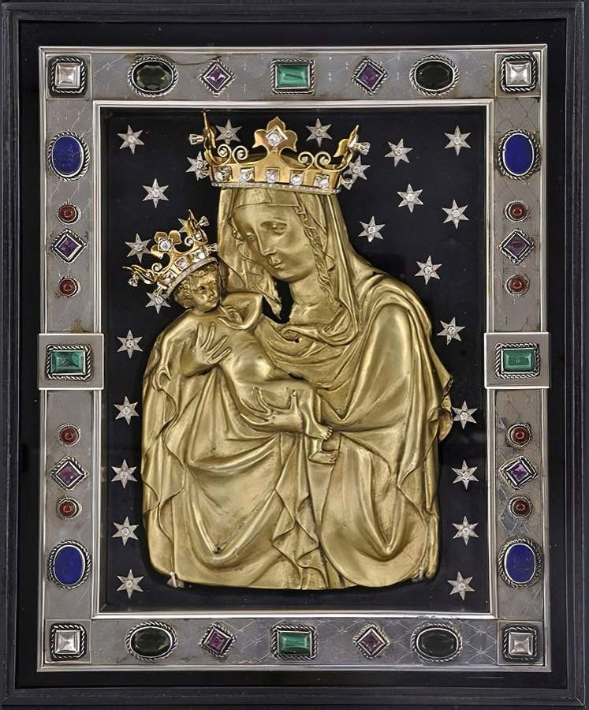
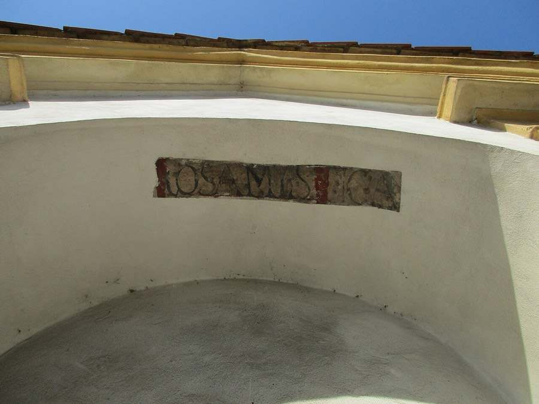
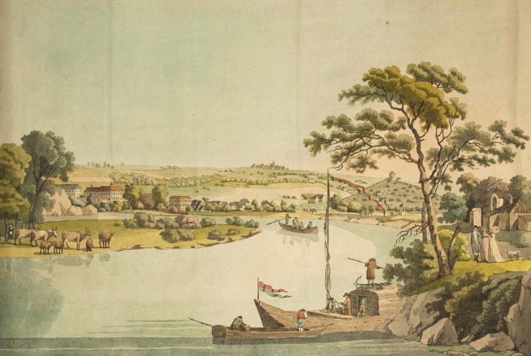
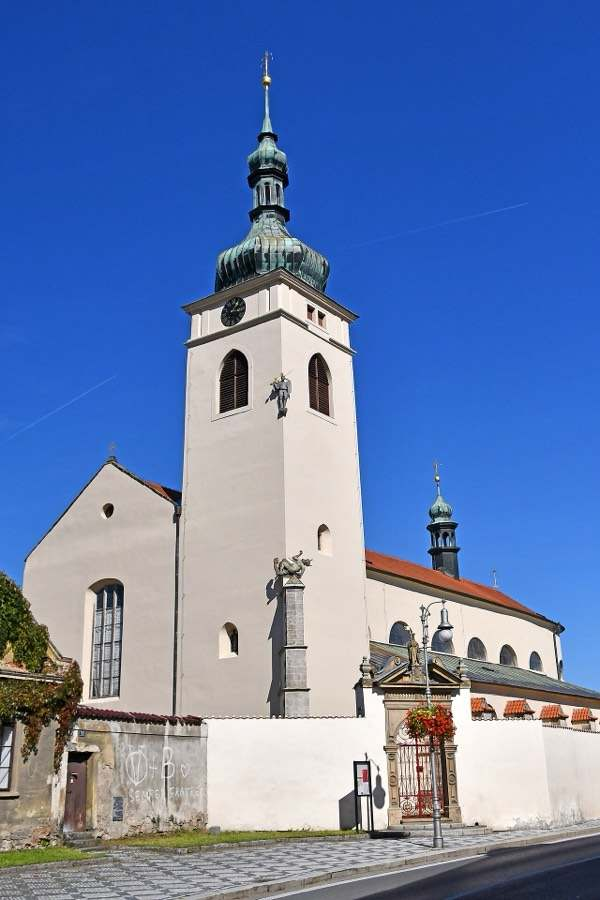

Tisíc let putování
Příběh Svaté cesty
Svatý Václav a Boleslav
Po staré zemské stezce z Prahy na severovýchod jezdil do Boleslavi už kníže Václav. U tamního kostela sv. Kosmy a Damiána ho 28. září 935 (podle jiných výpočtů 929) zavraždila družina jeho bratra Boleslava. O tři roky později převezli jeho tělo do Prahy do rotundy sv. Víta, podle tradice právě touto cestou. Na Proseku, kde průvod odpočíval, později vyrostl kostel sv. Václava, jeden z nejstarších v Praze.
Na místo Václavovy smrti se začalo putovat velmi brzy. V roce 1351 sem s arcibiskupem Arnoštem z Pardubic putoval i Karel IV. a založil nadaci, aby se tu každý den zpívala mše ke cti světce.

Palladium země české
Druhým důvodem poutí je malý kovový reliéf Panny Marie s dítětem, kterému se od roku 1609 říká Palladium země české, tedy ochranný obraz země. Podle legendy ho nosil na krku sv. Václav. Po vraždě ho ukryl jeho sluha Podiven a kolem roku 1160 ho na poli našel rolník. Dnešní reliéf pochází z 15. století.
Palladium mělo pohnuté osudy. Za saského vpádu počátkem 30. let 17. století bylo uloupeno a země ho musela draze vykoupit z peněz veřejné sbírky. Když se v roce 1638 vracelo do Staré Boleslavi, doprovázelo ho z Hradčan procesí s císařem Ferdinandem III. a jeho dvorem. Patřilo k největším slavnostem barokní Prahy. Od té doby se k Palladiu putovalo každý rok, hlavně k 15. srpnu, na svátek Nanebevzetí Panny Marie.
Jezuité a 44 kaplí
V roce 1674 se jezuité rozhodli pouť na staré cestě „ozdobit“. Dali podél ní postavit 44 výklenkových kaplí, tolik, kolik má loretánská litanie invokací. Podle dobového záznamu se 13. září 1676 „začalo dělat Boží muka na Špitálsku“ a pražský arcibiskup Jan Bedřich z Valdštejna kaple posvětil. Celá cesta byla hotová nejspíš v roce 1679. Každou kapli zaplatil jiný donátor: nejvyšší úředníci království, šlechtici, biskupové a opati. Jejich jména a erby byly namalovány na průčelí.
Kaple stojí po levé straně cesty zhruba 500 metrů od sebe. Jezuita Jan Tanner, který o cestě v roce 1679 vydal knihu Svatá cesta z Prahy do Staré Boleslavě (česky znovu 1692), to popsal prostě: každé zastavení je od druhého vzdáleno „délky mostu Pražského“.

Jak kaple vypadaly
Každá kaple je výklenek mezi dvěma pilastry, zakončený trojúhelníkovým štítem, obvykle s kulatým slepým okénkem. Uvnitř byla freska. Nahoře obraz Panny Marie z některého českého nebo moravského poutního místa, podle kterého kaple dostala jméno, dole výjev ze života sv. Václava. Na bočních stěnách byla česky napsaná modlitba k Panně Marii a popis václavského výjevu. Kaple jsou seřazeny abecedně podle poutních míst, od Aitlické (Údlice) po Zbraslavskou.
Výjimkou jsou první a poslední kaple. Obě byly zasvěceny přímo staroboleslavskému Palladiu a poslední nesla idealizovaný rodokmen sv. Václava až k tehdejšímu císaři Leopoldu I.

Úpadek a obnova
Od konce 18. století se cesty napřimovaly a stará stezka byla na mnoha místech rozorána. Proto dnes některé kaple stojí osamoceně v polích. V 19. a 20. století musely další kaple ustoupit železnici, továrnám, letišti a sídlištím. V roce 1935 jich ještě stálo 29, dnes zbývá 17 původních.
Od 90. let se kaple opravují. O většinu z nich se starají městské části a obce, kterými cesta prochází. Kbely postavily v letech 2018–2024 čtyři repliky zaniklých kaplí a spolek Via Sancta Mariana od roku 2019 staví na místech chybějících kaplí dřevěné kříže. Národní svatováclavská pouť se po padesátileté přestávce koná znovu od roku 2003.
Cíl cesty

Ve Staré Boleslavi stojí vedle sebe dvě baziliky. Bazilika sv. Václava stojí na místě jeho mučednické smrti; podle tradice Václav zemřel v její románské kryptě sv. Kosmy a Damiána. Bazilika Nanebevzetí Panny Marie je domovem Palladia. Nedaleko stojí ještě kaple blahoslaveného Podivena a románský kostel sv. Klimenta.
Text vychází z práce badatelů a nadšenců, kteří cestu zmapovali před námi. Jejich weby a knihy najdete v záložce Info v části „Kdo cestu zmapoval před námi“.